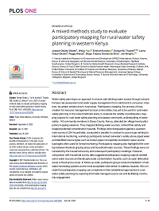
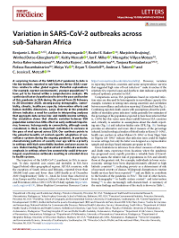
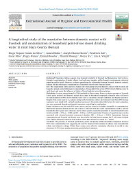
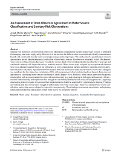
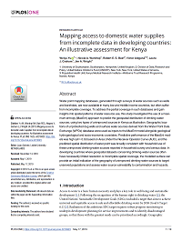
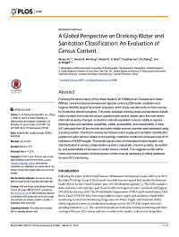
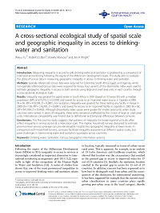
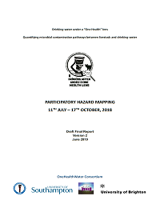
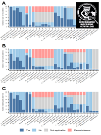

Growing spatial overlap between dam-related flooding, cropland and domestic water points: A Water–Energy–Food nexus management challenge in Malawi and Ghana
08/10/2021 In: Frontiers in Water, 3, 730370. DOI: 10.3389/frwa.2021.730370
Chengxiu Li, Weiyu Yu, Mawuli Dzodzomenyo, Moses Asamoah, Catherine Tlotlo Kerapetse, Matt Kandel, Jim Wright*
Mapping access to basic hygiene services in low- and middle-income countries: A cross-sectional case study of geospatial disparities
06/09/2021 In: Applied Geography, 135, 102549. DOI: 10.1016/j.apgeog.2021.102549
Weiyu Yu, Robert E. S. Bain, Jie Yu, Victor Alegana, Winfred Dotse-Gborgbortsi, Yi Lin*, Jim Wright

A mixed methods study to evaluate participatory mapping for rural water safety planning in western Kenya
28/07/2021 In: PLoS ONE, 16 (7), e0255286. DOI: 10.1371/journal.pone.0255286
Joseph Okotto-Okotto, Weiyu Yu, Emmah Kwoba, Samuel M. Thumbi, Lorna Grace Okotto, Peggy Wanza, Diogo Trajano Gomes da Silva, Jim Wright*

Variation in SARS-CoV-2 outbreaks across sub-Saharan Africa
02/02/2021 In: Nature Medicine, 27 (3), 447-453. DOI: 10.1038/s41591-021-01234-8
Benjamin L. Rice*, Akshaya Annapragada, Rachel E. Baker, Marjolein Bruijning, Winfred Dotse-Gborgbortsi, Keitly Mensah, Ian F. Miller, Nkengafac Villyen Motaze, Antso Raherinandrasana, Malavika Rajeev, Julio Rakotonirina, Tanjona Ramiadantsoa, Fidisoa Rasambainarivo, Weiyu Yu, Bryan T. Grenfell, Andrew J. Tatem, C. Jessica E. Metcalf
Effect of inter-observer variation on the association between contamination hazards and the microbiological quality of water sources: A longitudinal study
09/12/2020 In: International Journal of Environmental Research and Public Health, 17 (24), 9192. DOI: 10.3390/ijerph17249192
Joseph Okotto-Okotto, Diogo Trajano Gomes da Silva, Emmah Kwoba, Samuel M. Thumbi, Peggy Wanza, Weiyu Yu, Jim A. Wright*

A longitudinal study of the association between domestic contact with livestock and contamination of household point-of-use stored drinking water in rural Siaya County (Kenya)
07/09/2020 In: International Journal of Hygiene and Environmental Health, 230, 113602. DOI: 10.1016/j.ijheh.2020.113602
Diogo Trajano Gomes da Silva*, James Ebdon, Joseph Okotto-Okotto, Frederick Ade, Oscar Mito, Peggy Wanza, Emmah Kwoba, Thumbi Mwangi, Weiyu Yu, Jim A. Wright

An assessment of inter-observer agreement in water source classification and sanitary risk observations
24/12/2019 In: Exposure and Health, 1-14. DOI: 10.1007/s12403-019-00339-3
Joseph Okotto-Okotto*, Peggy Wanza, Emmaha Kwoba, Weiyu Yu, Mawuli Dzodzomenyo, S. M. Thumbi, Diogo Gomes da Silva, Jim A. Wright*

Mapping access to domestic water supplies in developing countries: An illustrative assessment for Kenya using maximum entropy model
17/05/2019 In: PLoS ONE, 14 (5), 1-19. [e0216923] DOI: 10.1371/journal.pone.0216923
Weiyu Yu*, Nicola Wardrop, Robert E. S. Bain, Victor Alegana, Laura J. Graham, Jim A. Wright
Integration of population census and water point mapping data – A case study of Cambodia, Liberia and Tanzania
04/05/2017 In: International Journal of Hygiene and Environmental Health, 220 (5), 888-899. DOI: 10.1016/j.ijheh.2017.04.006
Weiyu Yu*, Nicola Wardrop, Robert E. S. Bain, Jim A. Wright*

A global perspective on drinking-water and sanitation classification: an evaluation of census content
17/03/2016 In: PLoS ONE, 11 (3), 1-17. [e0151645] DOI: 10.1371/journal.pone.0151645
Weiyu Yu*, Nicola Wardrop, Robert E. S. Bain, Yanzhao Lin, Ce Zhang, Jim A. Wright*

A cross-sectional ecological study of spatial scale and geographic inequality in access to drinking-water and sanitation
26/11/2014 In: International Journal for Equity in Health, 13 (113), 1-15. DOI: 10.1186/s12939-014-0113-3
Weiyu Yu*, Robert E. S. Bain, Shawky Mansour, Jim A. Wright

Drinking-water under a ‘one health’ lens: participatory mapping final report
2019 VIRED International, Rabuour, Kenya
Joseph Okotto-Okotto, Weiyu Yu, S. M. Thumbi, Emmiesusan Kwoba, Peggy Wanza, Diogo Gomes da Silva, Jim A. Wright
Water sources and contamination hazards in Siaya County, Kenya 2018
25/09/2019 Data Collection, Colchester, Essex: UK Data Service DOI: 10.5255/UKDA-SN-853705
Weiyu Yu, Emmiesusan Kwoba, Thumbi Mwangi, Peggy Wanza, Jim A. Wright, Joseph Okotto-Okotto

Sanitary risk observation of hazards at surrounding rural water sources in Siaya County, Kenya 2018-2019